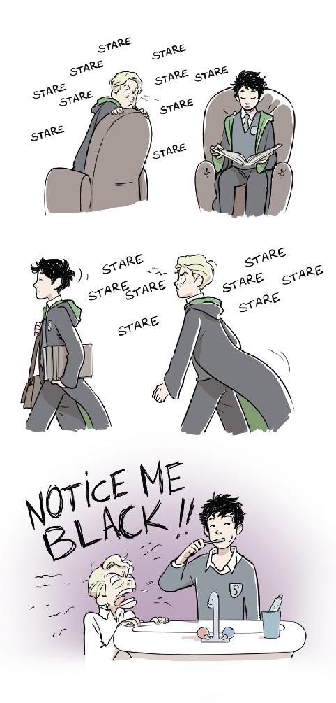

Chapter 4

First Week (Monday)
Malfoy kept pace with her on their way to their first class, Charms. She alternatively walked slightly faster, then slower, to see if he became unconsciously frustrated, but he didn’t seem to be thrown off balance. In fact, he adjusted smoothly to her gait each time she modified it, and never missed a conversational beat (not that she was giving him much fodder for conversing with).
“Looking forward to class, Black?” Malfoy asked, his tone bland but politely curious.
“To Charms?” Rigel glanced over at the boy who seemed almost determined to be friendly to her, “Or to classes in general?”
“Either,” he smiled in a way that would be charming in a few years, “Both.”
“Oh,” she nodded in exaggerated understanding, “No.”
This time she was sure his eyebrow twitched.
“None of them?” he pressed gently, “Not even Flying? I personally can’t wait to show those Gryffindors how Quidditch is supposed to be played.”
She debated turning the conversation toward his interest in Quidditch, but acknowledged that since he had given her one of his likes, it was only fair to reciprocate. “I suppose I am looking forward to Potions,” she offered, thinking that the flash of triumph in Malfoy’s eyes wasn’t at all suspicious.
“Potions? It’s lucky you’re in Slytherin then,” he said as they walked into the Charms classroom. She thought perhaps he would leave it at that and go sit with Nott or Zabini, but instead he practically herded her toward the table Pansy had just sat down at, which had two extra seats. She ended up in the middle seat and wondered if Malfoy thought sitting her by Pansy would make her comfortable enough to answer all his “friendly” questions. She also wondered if he was planning on writing up a dossier on her and sending it to his parents, but, as usual, she kept her wonderings to herself.
“What’s lucky?” Pansy asked, having only caught part of Malfoy’s remark.
“That Black is in Slytherin, since his interest is in Potions.”
Yeah, lucky, Rigel thought somewhat ironically.
“What’s that supposed to mean?” Pansy asked, a small bite to her usually cool voice. Rigel realized she must have voiced her comment out-loud, and then realized it sounded like she was sarcastically maligning her House on the first day. This was confirmed when Pansy continued quietly, so as not to let on to others that there was tension between two snakes, “You should be proud to be in Slytherin. Just because your dad might not approve—”
“Pansy,” Rigel interrupted, just as quietly, “I didn’t mean I considered myself unlucky to be in Slytherin. I meant it wasn’t really luck that I was put here. I wanted to be in Slytherin.” Not to mention I exercised more cunning in just coming to Hogwarts than most of the idiots in our year combined. As if I could be put anywhere else.
“But your father’s a-” she caught herself before she said “blood traitor” but the sentiment was there, “Well, why would you want to be in Slytherin?”
“Malfoy’s already told you that,” Rigel said.
Malfoy and Pansy shared a look of veiled disbelief. “You wanted to be in Slytherin so that Snape would help you with Potions?” Malfoy clarified. It was clear he thought that a pretty weak reason for abandoning family values, even if her family was a bunch of blood traitors.
Rigel shrugged, grateful that the professor had arrived at last and she could discontinue their conversation. She really hadn’t meant to share even that much, but it would be hazardous to her health for the other Slytherins to think she was holding prejudice against her own House.
Professor Flitwick was exactly how she might have expected someone with the name “Flitwick” to appear. He was small and chipper, and began calling role immediately after hefting himself onto a large stack of books. Rigel thought he must have impeccable balance from perching on top of books all day, which would explain why he was such a superb dueler in his youth.
Charms class was much as Rigel had anticipated. The most exciting part of the class was when she asked Professor Flitwick to use Rigel as her first name when he called role. He explained the theory behind the first charm they were learning, the Levitation Charm, and set them all to practicing on feathers for the rest of the period. Rigel watched as Pansy and Draco eventually got good enough with their feathers to try dueling with them mid-air. It wasn’t exactly thrilling, as even when the feathers would clash it was with a pathetic, whispering motion, so they got bored of that rather quickly.
“Why don’t you try, Rigel?” Pansy suggested, “If you don’t have it learnt you’ll only have to do it for homework.”
“I guess,” she sighed, trying to ignore the intent way Malfoy was staring at her feather, as if he had good reason to suspect it was a cleverly disguised bomb. She waved her wand, saying “Winguardium Leviosa,” but nothing happened. She tried again, and then again several more times, and still nothing.
“Hmmm, maybe the feather’s made of lead,” Pansy said, leaning down until she was eye-level with the table, “Wait—I think it moved a bit!”
“That was you breathing on it, Parkinson,” Malfoy said. He looked quite disappointed for some reason, “Try again, Black.”
She did. For the rest of the lesson she practiced until she thought she could perform the wand movement in her sleep. For all the good it did her.
“I just don’t understand,” Pansy kept saying, even as they walked to their next class, History of Magic, “It isn’t supposed to be that difficult. Are you sure you were trying hard enough?”
“Yes.” Maybe. Rigel suppressed a sigh. She had to get through almost an entire week of these worthless classes before she’d be anywhere near a cauldron. They didn’t have Potions until Thursday, unfortunately, and even that was only theory. She wouldn’t actually get to brew anything until Friday, and that’s assuming Professor Snape let them brew the first week.
All through History of Magic, Pansy and Malfoy gave her meaningful looks. She didn’t know what exactly they meant, but they would look at her, then look at each other, and then look back at her, and it certainly seemed to mean something to them, though Rigel couldn’t make heads or tales of it. By lunch, she was ready to hex both of them, only she didn’t actually know any hexes, and she was pretty sure both Pansy and Malfoy had been taught Shield Charms by their paranoid parents. Then again, if I had as many enemies as the Malfoys, I’d make sure my kids could defend themselves too.
Just when she thought they’d got over their first Charms lesson, Malfoy dragged Pucey into the discussion over the lunch table. “Adrian, how long did it take you to learn the Levitation Charm?” he asked across the table.
“Oh, a while, actually,” Pucey scratched his head, “Nearly the whole class period I think, but then again, my parents were a bit more strict on the rules about underage magic than yours. I never did magic on purpose until I came to Hogwarts.”
Malfoy and Pansy both looked upset at this. Malfoy, Rigel could understand. If he were looking for something interesting to dish on her, he would be sadly disappointed by her spell-casting skills, of which she had none. Pansy though… Rigel frowned, or at least she let her eyebrows crease together a bit. Perhaps Pansy was regretting making friends with Rigel now that she was revealed to be magically average (or slightly below average, she thought with a mental grimace).
Apparently Pucey had been filled in while she was lost in thought, because he turned to her with an expression of surprise and concern, “You couldn’t even get it off the table?”
She shrugged.
“Not even a twitch,” Pansy supplied. How nice to have such blunt friends.
“Well, how hard were you trying?” Pucey asked.
“I tried many times,” she said, “My wand movement and pronunciation were correct, it just didn’t work.”
“And you’re sure you’re not using a fake wand?” Pansy glanced at her sleeve, obviously expecting a rubber chicken to emerge and give the game up.
“Yes, I’m sure.” Twelve inches, ash: unicorn hair. Ollivander called it “well-balanced.”
“But wait,” Pucey said, “You said that you tried several times, but not how hard you tried.”
Rigel gazed at him blankly.
“Oh for—” Malfoy, it seemed, had run out of patience for the day. She gave him points for almost making it through lunch, “You have to want the magic to work, Black. You can’t just wave your wand and expect it to do stuff.”
“That’s right,” Pucey said, “Intent is crucial when casting a spell, along with concentration and determination.”
How silly, Rigel thought, in Potions you can’t get a better result by simply wanting it more. You have to go through the necessary procedure. It’s no wonder wizards act like a bunch of spoilt children if most of their needs are met the moment they want it badly enough. But all she said was, “Oh,” before turning back to her meal. She chewed on a carrot thoughtfully while Malfoy huffed moodily next to her and the other two gave it up as a bad job altogether.
Defence Against the Dark Arts was, if anything, worse than Charms. Their professor was a stuttering young man who had apparently had a bad run-in with Vampires while on his tour of the continent the year before. Rigel could see why Sirius and her father would think such professors would make easy targets for practical jokes. He did seem to know at least the basics of defence, however, and he started them off trying to light their wand-tips with the Lumos spell. Pansy yawned dramatically, and from Malfoy’s expression of agreement Rigel assumed this was one of the spells that any kid whose parents weren’t strictly law-abiding would have already learnt. Which left the two of them with nothing better to do than to tutor Rigel.
“No, no, say it more forcefully.”
“Wave your wand like you mean it.”
Finally she placed her wand on the desk and turned to her little cheerleaders, “Are you two in Hufflepuff?”
“What?”
“No!”
“Then stop badgering me.”
They both looked highly offended and Pansy grumbled a bit, but they settled for amusing themselves with critiquing the others in their class. Rigel diligently kept at it until the end of the class period, despite what a waste of time it felt like. She added Lumos to the list of spells whose wand movements she had committed to muscle memory, and was glad when class was finally over.
They had free time to do homework and the like every day before dinner, so Rigel, Pansy, and Malfoy headed back to the dungeons to work on an assignment Professor Binns had given them. They had to list what they thought were the most important historical events in the last century, but as all three were well-versed in recent wizarding history (Pansy and Malfoy because they were taught all wizarding history and Rigel because she read the newspaper) it didn’t take too long. Unfortunately, that meant there was plenty of time for them to bug Rigel about her spell-casting.
“It’s like you’re a muggle,” Malfoy said.
“Maybe I am,” she said. Both purebloods flinched back almost involuntarily before their brains caught up.
“No, you’re not,” Pansy said, “You just aren’t trying hard enough. Like, what do you want more than anything else right now?”
“I want you to stop bugging me.”
“Well, that’s why it’s not working,” Malfoy said, “The feather won’t float until the thing you want most in the world for one moment is to make it float.”
“But why would I want to make it float?” she asked reasonably, “It would be easier and faster for me to pick it up.”
“What if you wanted to move a boulder?”
“Can you move a boulder with Winguardium Leviosa?”
“Well, no, you need a stronger spell, but just imagine.”
“I can’t think of a single time in my life when I’ve thought to myself, oh if only I could move that boulder,” Rigel shrugged, “It just seems rather pointless, I guess.”
Pansy sighed, “Okay, then what about the Lumos Charm? It’s very useful.”
“But it isn’t dark in here,” she gestured to the common-room, “I have no need of a lit wand.”
“You are never going to learn magic like that,” Malfoy said, his eyes narrowed.
Rigel shrugged. After all, she was here to learn Potions, not magic.
After dinner she retreated to her rooms and started writing a letter to Sirius. She didn’t know how to change her handwriting yet, so she used a dicto-quill and hoped Sirius assumed his son was just too lazy to write it himself.
Dear Dad,
Miss me yet? I miss having my own room already, but the food here is way better than the stuff you cook, ha ha. The train ride was fun, I met a nice boy called Neville (I think he’s a Longbottom), and the castle is just as cool and you and Uncle James always said! So don’t freak out, but I was sorted into Slytherin—surprise! Don’t worry, cause everyone’s been really cool to me so far and the other boys in my dorm are nice enough, although some of the girls in our year were giving me looks like they thought I would pounce on them at any moment. What exactly did you do to their mothers when you were here, dad?
My first day of classes went well, but history’s really boring! Our DADA professor looks like one good prank would scare him out of his garlic necklace, but I guess I won’t know until I try, huh? So yeah, everything’s good here, don’t worry too much and promise not to turn my bedroom into a pool hall or something, ok?
With love,
Archie
(P.S.—the you-know-what still works)
She thought it sounded enough like her cousin to pass muster. She was careful not to mention any Snapes, Malfoys, or the trouble she was having with spells. No need for Sirius to get upset; if he ever came to visit the school, everything would be ruined. She knew it was going to be imperative that she avoid things like injuries, massive amounts of detentions, or anything else that would give Sirius a reason to show up at Hogwarts. Her acting was good when she bothered, but he was bound to notice she wasn’t Archie unless she hit him with a Conjunctivitis Curse as soon as he walked in the door.
Rigel packed away the dicto-quill and looked around her dorm. It was still a good forty minutes until curfew, so neither of her roommates was asleep. Nott was playing a game of exploding snap with Zabini, who was apparently already sick of dumb and dumber’s illustrious company. Malfoy was… oh great, he appeared to be writing a letter as well. That meant she probably wouldn’t be going to the Owlery alone. She pulled out the Marauder’s Map casually, knowing any suspicious movement would only trigger her fellow Slytherin’s notice. She began quietly muttering aloud nonsense phrases, seeming for all the world as if she was reading a portion of her letter out loud under her breath to check the wording. She slipped “I solemnly swear that I am up to no good” in the middle and worked quickly to memorize the fastest route to the Owlery. Wiping the map in the same manner, she tucked it away once more and rolled up her letter as unobtrusively as possible.
She pulled on her gloves and wrapped a scarf around her neck snugly. Sirius had charmed Archie’s robes to be weather-resistant, so she didn’t need a cloak. She stood casually, slipping her letter into the folds of her school robes. She was almost (so close) to the door when, surprise of surprises, Malfoy stopped her.
“Going somewhere, Black?” he asked.
Is he going to say that every time it becomes clear that I am, in fact, going somewhere? She mentally rolled her eyes a bit, “Yes, Malfoy.”
“You’re going to send a letter,” he said it like an accusation, “You’re going to the Owlery.”
She shrugged noncommittally, which she supposed was as good as an admission. He rose from his bed and began rolling his own letter, saying, “It’s only a half-hour or so until curfew.”
“It shouldn’t take more than fifteen minutes each way,” she pointed out.
“It took you twenty minutes just to get out of the dungeons this morning,” Malfoy said evenly, “I’m coming with you.”
“There’s really no need,” Rigel said half-heartedly.
Nott spoke up from across the room, “Sure there is. You don’t want to be wandering alone this late at night in Gryff and Claw territory. Weren’t you listening to Professor Snape this morning?”
“It’s no trouble,” Malfoy assured her, his grin flashing a bit too much tooth to be completely friendly, “I need to send my letter with Archimedes anyway.”
A Malfoy would have an owl named Archimedes, she thought, but she gave in with a modicum of good grace. She had expected Malfoy to insist upon coming anyway. They walked down their hall and across the common room in silence, broken only by Malfoy speaking the password to the wall-door for them to leave.
The dungeons were cold and eerily quiet; their footsteps echoed as they walked, which she thought would be both an advantage if you needed to hear intruders coming, and a disadvantage if you wanted to move about unseen. She took the turns that led to the Entrance Hall confidently, and Malfoy seemed content to follow her lead until they reached the ground floor. He turned toward the main stair, which would lead to the connecting stairway that ran up the middle of the castle, while she turned toward the West stairway, which led up to the side of the castle. They both stopped and stared at one another.
“We should take the main stair,” Malfoy said, “We don’t know the castle well enough to take side-routes and the more remote an area is, the easier it is to get ambushed there.”
“Isn’t that why you came with me? To prevent attack from anyone who might take on a lone snake?” she asked, with a look on her face that said clearly: you can go wherever you want, but I’m going this way.
He made a noise like a smothered sigh in the back of his throat, but walked determinately over to the West stairs, glaring at her all the time. Rigel ignored his dark look and led them up three flights of stairs to the fourth floor, and it wasn’t until she turned down a corridor that Malfoy spoke up exasperatedly, “Okay, now I know we’re going the wrong way. You’re turning East, and the Owlery is next to the West Tower. We should have kept going up the next flight of stairs.”
Rigel kept walking until she reached a tapestry of two young wizards dueling over a blonde-haired maiden. She moved the hanging aside and glanced back as if to say, Coming? Malfoy shut his mouth and eyed the passageway she’d revealed untrustingly.
“How do I know this isn’t a trap?” he said as he slowly peered into the gloomy space. It was a steep, narrow staircase that seemed to go almost straight up.
“Yes, Malfoy, I forced you to follow me to the Owlery so I could get expelled my first night by pushing the Malfoy scion down a flight of stairs,” Rigel said.
He looked close to huffing, but he pushed past her and started up the stairs nevertheless. He lit his wand with the Lumos spell and sent her a look over his shoulder that said see how useful it is? She followed with amusement, calling, “Watch out for step thirty-three.”
He stopped dead. She could almost hear him counting to ten in his head before he spoke, “Come again?”
She drew level with him, barely managing it in the narrow passage, “We are now on the twenty-fourth stair, and I thought you should know that the thirty-third step is, in fact, a trap.”
He stared at her, probably imagining a violent strangulation of the Black heir, “Why don’t you go first?”
She did, gladly, stepping exaggeratedly over the trick stair to make sure Malfoy didn’t forget, as amusing as it would have been to watch him become trapped knee-deep in a hidden staircase. They came out of the passage on the seventh floor, a few meters East of the entrance to the Owlery stairs. Malfoy pursed his lips, but was too proud to ask her how she’d known the way. Just as well, since she would only have lied and said she heard about it in passing from an older student.
They took the steps up to the Owlery quickly. It wasn’t yet cold enough for the stairs to be icy, but it was close, and the biting wind discouraged any lingering. Rigel went to find a school owl to take her letter and Malfoy whistled sharply for his. Rigel said, “Sirius Black” very clearly and watched the Screech Owl fly off into the night. She turned around and saw Malfoy muttering agitatedly to himself beside his Eagle Owl. She suddenly realized that while she had dressed warmly for her trip to the Owlery, which was always freezing because it had to be exposed for the birds to get in and out, Malfoy (being too preoccupied with insisting on accompanying her) hadn’t.
In that moment, he truly looked his eleven years. His nose was slightly red, as were the tips of his ears, and his hair was a wind-blown mess. He cursed quietly again as he fumbled and dropped his tightly rolled scroll, and Rigel guessed his fingers were numb as well. She stooped down to catch the letter before it could hit the ground and become covered in bird-droppings. Malfoy looked up sharply, his usual frozen expression made less effective by the knowledge that he probably was freezing. So she ignored his glower, tied the scroll securely to his stately owl’s leg, and said, “To your father?”
“None of your business,” he snapped.
She raised an eyebrow, “Shall I plug my ears while you give your owl instructions then?”
He might have flushed, but it was too cold to tell, “Malfoy Manor,” he told the bird.
Rigel eyed the bird as it took flight, wondering how much of that letter was about her, but then shrugged mentally, thinking she might be a little too good at pretending to be her cousin if she was already so vain. She turned back to Malfoy, whose breath was coming in short puffs between lips that had lost most of their colour. She took off her scarf and quickly wound it around the pale boy’s neck and mouth, effectively muffling his spluttered protests for a few crucial moments. By the time he wrestled his chin free of the thick fabric she’d stripped off her gloves and roughly grabbed hold of one of his hands, tisking when she found it trembling with cold.
“What—” he started through clenched teeth.
“Hold these for me, won’t you Malfoy?” she said, shoving his hand into one of her already-warm gloves and proceeding to do the same with the other, “Thanks.”
“You—”
But Rigel was already headed away from him toward the stairs, “Hurry up, Malfoy, we don’t want to be late.”
“As long as we’re back to the dungeons before curfew, Snape won’t take points,” he said moving quickly to catch up, and she noticed his voice was muffled again. She bit her lip to keep from smiling at the picture the youngest Malfoy made with his face half-buried in her scarf once more. He looked like a baby bird peeking out of its nest, except he had another nest on the top of his head in the form of his once-perfect hair.
They walked back to the common room in relative silence, Malfoy choosing not to comment on the way Rigel navigated the dungeons perfectly. He was learning that it was better not to question her, since she never gave a straight answer anyway. At the entrance to their rooms he quickly divested himself of her scarf and gloves and pushed them into her hands before opening the door and heading for his side of the room without looking back.
She stored the articles of clothing into her trunk and took off her shoes, then lay down on her bed and willed sleep to come. Nott glanced over at her through his hangings and said, “Don’t you wear night clothes? Or at least sleep under the covers?”
“No,” she said. She had decided it would be stranger for her to change in the bathroom every time she put pj’s on than for her to just sleep in her clothes. She’d rather come off as paranoid than have them think she had something to hide. She slept on top of the covers so that if there was an emergency or she was attacked in the middle of the night she wouldn’t be hampered by heavy bedclothes, and between sleeping in her robes and the small fireplace always lit by the elves in the evening, she doubted she’d need them.
Nott chuckled and let the matter drop, turning away from her onto his side. Rigel stared up at the canopy thinking over her first day at Hogwarts. She wouldn’t know if she’d made the right choice until Friday, but so far it was both better and worse than she’d expected. She had a good (if sometimes nosy) friend in Pansy, and even Malfoy was mildly entertaining at times. On the other hand, classes had been a disaster so far. She didn’t expect Transfiguration to be much better, though Herbology would be fine. She knew a lot about plants, or at least the ones used for Potions ingredients. And then she had an entire afternoon of Flying class. She sighed quietly to herself, wishing that she didn’t have to take all those other, boring classes. All she wanted to do was brew. Soon after, sleep took her away in its arms, and she dreamt peacefully of simmering cauldrons, once again oblivious to the silver stare directed at her from the bed to her right.
*
He stared at the sleeping boy on the next bed over as if he could answer all the questions swimming about in Draco’s head. And, Draco thought, he probably could, if he wanted to. But Rigel Black was proving to be most unforthcoming. All day he’d spent with Black, and all he knew about the other boy was that he had a vague interest in Potions and was absolutely dismal at magic in general. Not much to write home about (though he had, of course), and usually not enough to warrant any continuing interest on his part, but there was something about Rigel Black that had Draco determined to know more. The boy had apparently got hopelessly lost that morning before breakfast, but then, perhaps as a result of that time spent wandering, he had demonstrated complete confidence in navigating the dungeons that very evening. And when in Morgan’s name had Black had time to find out about that passage to the seventh floor?
He didn’t act much like the son of Sirius Black either, from what Malfoy had heard about his mother’s cousin. Aside from the casual flirting he exhibited at the Welcoming Feast, Black seemed quite different, at least personality wise. He did have his father’s hair and eye colour, and the aristocratic features so carefully bred into the Black line. Black’s eyes were a duller grey than his, but then, he had a silver sheen distinctive to the Malfoys to complement his mother’s genes. Rigel Black was quiet, withdrawn, and had no compunction ignoring social norms when it pleased him. He had kept most personal information close to his chest, and yet he had chosen to dictate his letter to his father out loud, which didn’t fit at all.
And that letter! Draco had been able to hear most of it from where he was writing his own, and either Black was keeping his real personality locked up tight so far or he was out-and-out lying to his dad. Draco was leaning toward the second, because several of the things in the letter really had been lies. Rigel Black didn’t seem the type to be interested in pranks, though Draco knew Sirius and James Potter had been, and his classes most certainly hadn’t gone well.
Also, Black had been borderline rude to Draco most of the day, but had given up his own scarf and gloves in the Owlery like it was nothing. Overall, the boy was extremely contradictory, if not downright suspicious, and Draco would be keeping a close watch on the newest Black regardless of what his mother had to say about it. Sooner or later he’ll show his hand, Draco thought, and I’ll be there.

Table of contents
- The Pureblood Pretense by Violet Matter
- The Serpentine Subterfuge by Violet Matter
- The Ambiguous Artifice by Violet Matter
-
The Futile Façade by murkybluematter
- Cover
- Title Page
- Summary
- 1. Healing
- 2. Correspondence
- 3a. Seifer's Solution
- 3b. The Free Dueling Tournament
- 4. The Quidditch World Cup
- 5. Acknowledgement
- 6. Allegiances
- 7. Negotiations
- 8a. Weighing of the Wands
- 8b. The Forbidden Forest
- 9. Blood Wards
- 10a. Freebrewing
- 10b. The Rod of Zuriel
- 11. Champion of Charity: Rigel Black Gives Back
- 12. Ascending
- 13. The Final Task
- Who is RBC?
- Epilogue